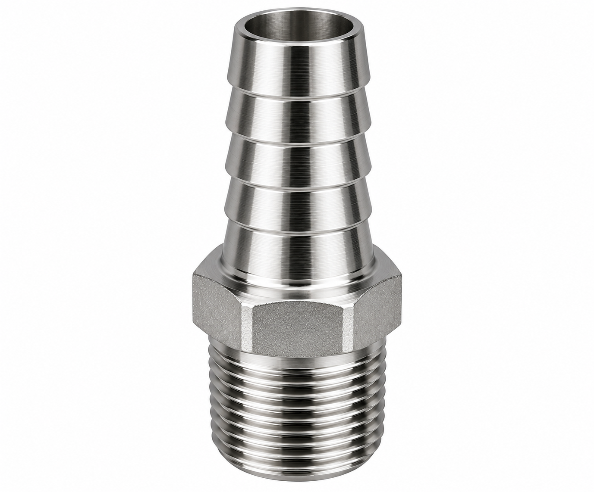

SS 316 and 316L hex, barrel, close and reducing nipples, with SS 304 for sheltered lines and heavy-wall options, supplied from Ahmedabad to Rajahmundry, Kakinada, Samalkot, Peddapuram, Amalapuram, Tuni and Mandapeta.
The Godavari splits into a delta before it reaches the sea, and on that delta sit two industrial cities. Kakinada, on the coast, has two ports, a special economic zone, large fertiliser plants, gas-handling facilities from the nearby offshore and onshore fields and one of India's biggest aquaculture and seafood-export trades. Rajahmundry, upriver, hosts a large paper mill, rice mills, oil-palm and agro-processing units and a growing tourism and pilgrimage trade centred on the Godavari ghats. Between them, canal-fed paddy fields stretch for kilometres.
Salt air, ammonia, gas, steam and brine all meet in this belt. Sunrise Industries makes and stocks stainless steel nipples in Ahmedabad and ships them to Godavari buyers. We recommend 316 and 316L for the coast, are plain about what ammonia and gas service rule out and plan dispatch around turnarounds and the long road.
Kakinada's industrial heart is its fertiliser and chemical complex. Large plants make urea, ammonia and complex fertilisers, and a coastal port system moves the raw materials and the product. The Kakinada SEZ adds pharma, chemical and engineering projects, and gas from the Krishna–Godavari basin supports power, fertiliser feedstock and city supplies. The same coast is India's aquaculture capital: shrimp farms, hatcheries, feed mills, processing plants, ice plants and cold stores line the delta, and seafood exporters ship from Kakinada's port.
Rajahmundry and its neighbours run a different set of plants. A large paper mill on the Godavari consumes steam, water and process chemicals in volume. Rice mills and oil-palm crushing units process the delta's crops. Peddapuram, Samalkot and Mandapeta add engineering, sugar and agro-units. And every twelve years the Godavari Pushkaralu brings tens of millions of pilgrims to Rajahmundry's ghats, the next expected in 2027, which is already driving hotel, water-supply and infrastructure work.
The delta is salt-laden, humid and cyclone-exposed, and its refrigeration is mostly ammonia.
 Precision Joints for Rajahmundry–Kakinada Heavy Industry & Plants
Precision Joints for Rajahmundry–Kakinada Heavy Industry & Plants

The standard choice for outdoor, port-side, process, instrument and chemical lines. Controlled tightening and easy re-torque.
Click Here
Reach between valves, tanks and heat exchangers on coastal and plant pipework with full NPT/BSPT threading.
Click Here
Compact fully threaded connections on instrument manifolds, reactor sample points and tight skid piping.
Click Here
Precision steps from header to instrument or branch without redundant fittings. Available in equal hex flats.
Click Here
Heavy-wall nipples for steam boilers and severe duty, plus ribbed SS hose nipples for seafood, agro and plant wash-downs.
Click Here
Machined to drawing or sample in SS 316L, 304, MS, brass and aluminium with mixed NPT/BSPT threads for imported skids.
Click HereNeed a custom SS nipple that isn't in any catalogue? Our engineering team in Ahmedabad takes your drawing or sample from first prototype to full-scale production, with material selection, CNC machining, threading and inspection all done under one roof. We machine hex, barrel, close and reducing nipples in SS 304 and SS 316, in BSP, BSPT and NPT threads, and in special lengths, mixed threads and non-standard hex sizes. With 10+ production lines, an ISO 9001:2015 certified quality system and fast dispatch to Rajahmundry–Kakinada, we deliver precision components that fit the first time.

| Where / Duty | Grade / Material | Wall / Schedule | Type | Engineering Note |
|---|---|---|---|---|
| Fertiliser-plant water, steam and instrument lines | SS 304 / 316 | Sch 40 / 80 | Hex, close | See ammonia note below |
| Port-side and outdoor coastal piping | SS 316 / 316L | Sch 40 / 80 | Hex, barrel | Salt air and monsoon |
| Gas-handling instrument and utility lines | SS 316 | Sch 80 | Close, hex | Follow your gas-system specification |
| Shrimp-processing, ice-plant and cold-store utilities | SS 304 / 316 | Sch 40 | Hose, hex | Brine and daily washing; ammonia lines: follow designer's spec |
| Hatchery and feed-mill water and steam | SS 304 / 316 | Sch 40 | Hex, barrel | Salt and humidity |
| Paper-mill steam and process water | SS 304 / 316 | Sch 40 / 80 | Barrel, hex | Steam and chemicals |
| Rice- and oil-palm-mill steam lines | SS 304, Sch 80 | Sch 80 | Barrel, hex | Season-peak duty |
| Hotel and pilgrim-facility plumbing | SS 304 | Sch 40 | Hex, barrel | Hidden joints |
Ammonia refrigeration and fertiliser-plant ammonia lines have their own material rules. Brass and copper alloys are not suitable for ammonia. Follow your process designer's specification. Typical selections only. Pressure class, temperature and code compliance are set by your design engineer.
Never use brass or copper alloys on ammonia. Gas and ammonia systems follow your process designer's specification, and we supply to it.
Anything outdoors on the Kakinada coast faces salt, humidity and monsoon. Choose 316 or 316L. Standard 304 can stain and pit within a season.
Brine, steam, process chemicals and wash-down each call for a particular grade. Name the fluid, concentration and temperature, and we'll say honestly if a duty needs more than we supply.
Fertiliser overhauls and the Pushkaralu run to fixed dates. Send the list early, and we'll say honestly what we can meet.
| Material | Good for | Not good for |
|---|---|---|
| SS 316L | Outdoor, port, brine, seafood and chemical lines | Wet chlorine, very strong acids (check chart) |
| SS 316 | Instrument, coastal and wash-down lines | As 316L where welded after |
| SS 304 | Sheltered indoor utilities, steam, clean water, paper-mill steam | Salt air, brine, strong chlorides |
| Brass | Dry indoor air lines | Outdoor coastal air, ammonia, chemicals |
| Mild steel | Dry painted indoor lines | Anything wet, outdoor or coastal |
Marine spray along Kakinada port and brine washing in aquaculture mandate SS 316 / 316L, while Rajahmundry paper mill boilers and oil-palm mills utilise SS 304 Schedule 80.
Salt air and brine attack the protective film on stainless. 304 can stain and pit. 316 and 316L resist this far better.
Storms can bring wind, salt and flooding between October and December. Secure lines, and check threads after a storm.
Constant cleaning stresses every joint. Choose smooth finishes and corrosion-resistant grades.
Fertiliser plants, ice plants and cold stores all use ammonia. Check every line against your designer's specification.
Overhauls and the Pushkaralu run to fixed dates. Missing small parts delay work.
We CNC-machine nipples to sample or drawing in stainless steel, mild steel, brass and aluminium. Regular requirements from Rajahmundry–Kakinada include:
We also supply SS couplings, SS flanges, seamless, welded and EFW pipes and tubes, sheets and plates, perforated sheets for drainage and screens, and powder coating and PVD coating for parts that can't be stainless. One enquiry covers the whole job.
Urea, ammonia synthesis loops, process steam and cooling circuits at Kakinada.
Offshore gas receipt terminals, deep-water port utilities, petrochemical handling.
Seawater filtration, brine washing lines, pellet conditioning extruders.
IQF freezers, flake ice plants and refrigerated cold storage facilities.
Digester steam headers, black liquor handling, chemical recovery boilers at Rajahmundry.
Palm oil extraction sterilizers, boilers and grain parboiling lines across delta.
Hotels, municipal water schemes, and pilgrim facilitation piping.
Dispatched by road freight along the national highway corridor. Freight and transit time are confirmed in your quote. Combine requirements into one larger order to keep freight sensible.